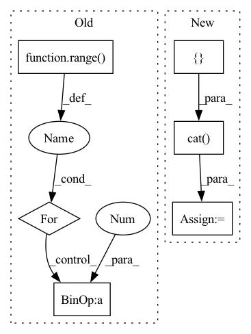

Pattern ID :35424

Before Change
decoder_input_ids.shape[1],
decoder_input_ids.shape[1]),
dtype=torch.float).to(self.device)
for t_index in range(self.max_seq_length-1):
perm_mask[:, -t_index, -(self.max_seq_length-1):-t_index] = 0.0
perm_mask = perm_mask.contiguous()
target_mapping = torch.zeros((input_ids.shape[0], decoder_input_ids.shape[1], decoder_input_ids.shape[1]),
dtype=torch.float).to(self.device)
After Change
def calculate_loss(self, corpus, epoch_idx=-1, nll_test=False):
text_sequence = corpus["target_text"]
input_ids = []
attn_masks = []
for text in text_sequence:
sentence = " ".join([self.sos_token] + text + [self.eos_token])
encoding_dict = self.tokenizer(
sentence,
max_length=self.max_seq_length,
padding="max_length",
truncation=True,
return_tensors="pt",
add_special_tokens=False
)
input_ids.append(encoding_dict.input_ids)
attn_masks.append(encoding_dict["attention_mask"])
input_ids = torch.cat(input_ids, dim=0).to(self.device)
attn_masks = torch.cat(attn_masks, dim=0).to(self.device)
decoder_target_ids = input_ids[:, 1:].contiguous()
In pattern: SUPERPATTERN
Frequency: 3
Non-data size: 6
Instances
Fragment ID: 100631146
Project Name: rucaibox/textbox
Commit Name: 53c76331ad0c943d52e3310affd25d0e505eb830
Time: 2021-01-19
Author: 1020139164@qq.com
File Name: textbox/model/LM/xlnet.py
M Class Name: XLNet
N Class Name: XLNet
M Method Name: calculate_loss(4)
N Method Name: calculate_loss(3)
M Parent Class: UnconditionalGenerator
N Parent Class: UnconditionalGenerator
M File Name: textbox/model/LM/xlnet.py
N File Name: textbox/model/LM/xlnet.py
M Start Line: 90
M End Line: 113
N Start Line: 72
N End Line: 111
'>
Before Change
select_size = gt_units.shape[1]
units_size = gt_units.shape[2]
for i in range(batch_size):
j = gt_select_units_num[i]
if j < select_size:
nums = min(units_size - 1, entity_nums[i].item())
nums = torch.tensor(nums, dtype=entity_nums.dtype, device=entity_nums.device)
gt_units[i, j] = L.tensor_one_hot(nums, units_size).long()
After Change
padding = torch.zeros(batch_size, 1, units_size, dtype=gt_units.dtype, device=gt_units.device)
token = torch.tensor(AHP.max_entities - 1, dtype=padding.dtype, device=padding.device)
padding[:, 0] = L.tensor_one_hot(token, units_size).reshape(-1)
gt_units = torch.cat([gt_units, padding], dim=1)
print("gt_units", gt_units) if debug else None
print("gt_units.shape", gt_units.shape) if debug else None
gt_units[torch.arange(batch_size), gt_select_units_num] = L.tensor_one_hot(entity_nums, units_size).long()
'>
Fragment ID: 100631145
Project Name: liuruoze/mini-alphastar
Commit Name: 915eac43e5d4020880519d5c9094dc622a9acdfb
Time: 2021-12-15
Author: liuruoze@163.com
File Name: alphastarmini/core/arch/arch_model.py
M Class Name: ArchModel
N Class Name: ArchModel
M Method Name: sl_forward(9)
N Method Name: sl_forward(9)
M Parent Class: nn.Module
N Parent Class: nn.Module
M File Name: alphastarmini/core/arch/arch_model.py
N File Name: alphastarmini/core/arch/arch_model.py
M Start Line: 188
M End Line: 204
N Start Line: 188
N End Line: 212
'>
Before Change
bins = self.fromBits(torch.Tensor(bins).to(self.device)).long()
vec = torch.take(self.centroids[self.nbits], bins)
for i in range(self.num_hadamard):
vec = self.irht(vec, int(seed + (self.num_hadamard - 1) - i))
return (scale * vec)[:int(dim)].cpu().numpy()
After Change
total_dim = int(metadata[1])
curr_index = 0
vec = []
for k in range(2, max(metadata.keys()) + 1, 2):
scale = metadata[k]
dim = int(metadata[k + 1])
vec.append(self.decompress_slice(bins[curr_index:curr_index + dim], scale, dim, seed))
curr_index += dim
vec = torch.cat(vec)
vec = vec[:total_dim]
return vec.cpu().numpy()
'>
Fragment ID: 100631143
Project Name: intel/openfl
Commit Name: c10577cb32201c45846d920f871e4bcab76e37ed
Time: 2023-01-13
Author: 30897761+yanivbi@users.noreply.github.com
File Name: openfl/pipelines/eden_pipeline.py
M Class Name: Eden
N Class Name: Eden
M Method Name: decompress(3)
N Method Name: decompress(5)
M Parent Class:
N Parent Class:
M File Name: openfl/pipelines/eden_pipeline.py
N File Name: openfl/pipelines/eden_pipeline.py
M Start Line: 252
M End Line: 260
N Start Line: 337
N End Line: 354